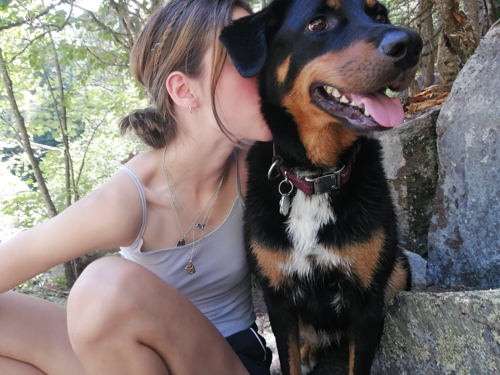
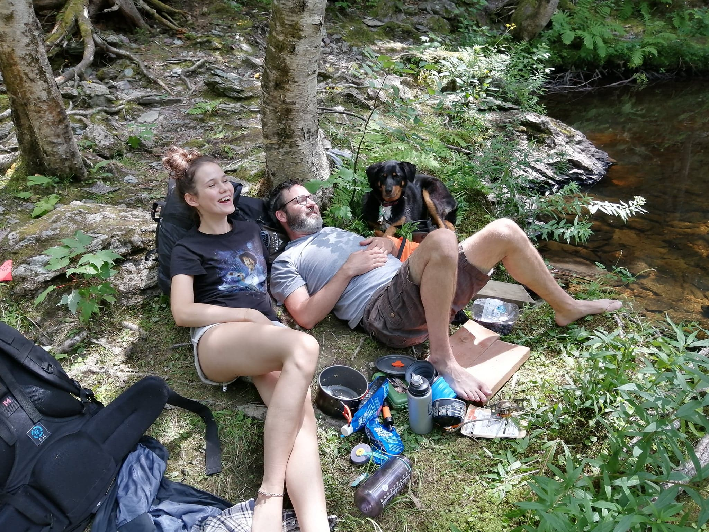
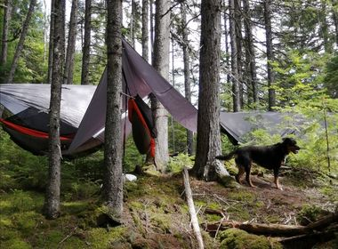
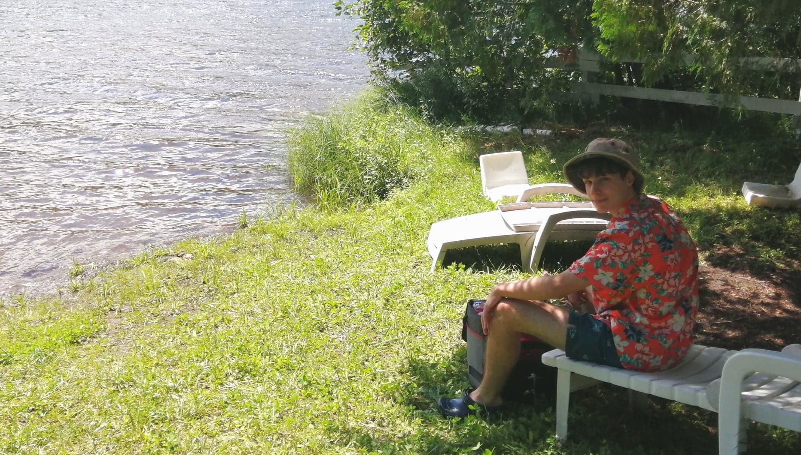

14 octobre 2020
Mon bébé de type chien
J'ai une grosse bête suavge comme chien, elle est très mignonne mais il faut pas se laisser avoir elle a une langue très curieuse et des pattes très volatile qui nous font souvent se retrouver par terre. Elle mange tout se qui traine par terre, par sa je suis pas très fier d'elle, mais au moins elle fait des yeux de culpabilité alors c'est pas trop pir hihi.
Elle aime se baigner, courrir après les écureils, chunké, se rouler dans des trucs louches, courrir et bien plus, bref elle est le bébé parfait.

14 octobre 2020
Ma famille sauvage
On aime beaucoup aller faire des expéditions en nature. Parfois, on fait de la survie en forêt et on installe nos hamaks et on passe la nuit dans le bois. On filtre notre eau et on mange de la nourriture déshydratée. Mon chien pour sa par vie sa meilleur vie elle court partout, snif tout ce qui a à sniffer et court après tout ce qui ose bouger dans la forêt. Mon père nous montre comment partir des feux et s'équiper pour aller dans le bois, bref on passe du bon temps.
 
14 octobre 2020
Petit coin de paradis
Quand on peut mon copain, Antoine, et moi allont à mon chalet passer du bon temps. On se baigne, court partout, préparont des bons plats, fesont des parties d'échec beaucoup trop compétitive et ont s'amuse bien. On passe toujours de super moment et je suis toujours très heureuse.

14 octobre 2020
Moi et les arts
J'aime beaucoup dessiné, ça me rend toujours contente. Je dessines tout ce qui me passe par la tête, ce qui crée souvent de drôle de monstres inimaginés. J'ai commencé la peinture , il y a pas si longtemps, j'aime beauoup ca permet de faire beaucoup d'autre choses différentes.